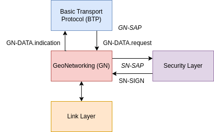

GeoNetworking (GN)
Diagram
Usage
Router Instantiation
from flexstack.geonet.router import Router as GNRouter
from flexstack.geonet.mib import MIB
from flexstack.geonet.gn_address import GNAddress, M, ST, MID
mac_address = b"\xaa\xbb\xcc\xdd\xee\xff"
mib = MIB()
gn_addr = GNAddress()
gn_addr.set_m(M.GN_MULTICAST)
gn_addr.set_st(ST.CYCLIST)
gn_addr.set_mid(MID(mac_address))
mib.itsGnLocalGnAddr = gn_addr
gn_router = GNRouter(mib=mib, sign_service=None)
location_service.add_callback(gn_router.refresh_ego_position_vector)
Request Sending GeoNetworking Packet
from flexstack.geonet.service_access_point import (
CommonNH,
PacketTransportType,
CommunicationProfile,
SecurityProfile,
TrafficClass,
Area
)
request = GNDataRequest()
request.upper_protocol_entity = CommonNH.ANY
request.packet_transport_type = PacketTransportType()
request.communication_profile = CommunicationProfile.UNSPECIFIED
request.security_profile = SecurityProfile.NO_SECURITY
request.its_aid = 0
request.security_permissions = b"\x00"
request.traffic_class = TrafficClass()
request.data = b"some_payload"
request.length = len(request.data)
request.area = Area()
gn_router.gn_data_request(request)
Receiving GeoNetworking Packet
from flexstack.geonet.router import GNDataIndication
def btp_data_indication(gn_data_indication: GNDataIndication) -> None:
print(f"Received GN data indication: {gn_data_indication.data}")
gn_router.register_indication_callback(btp_data_indication)